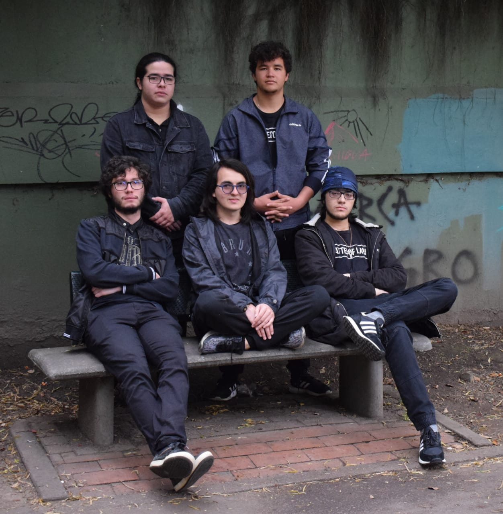

¡Bienvenidos a mi página!
En este sitio web se enterarán de quién soy yo, cómo es mi desempeño académico, mis intereses y cómo contactarme.
Navega usando la barra de navegación para conocer estos aspectos de mi vida.
Biografía
| Edad actual | Fecha de nacimiento | Lugar de nacimiento | Estatura | Grupo sanguíneo |
|---|---|---|---|---|
| 21 | 27 de marzo de 1999 | Bogotá D.C. | 1.81 m | O+ |
Datos académicos
- Formación primaria
- Institución: Colegio San Carlos
- Grado alcanzado: 5to de primaria
- Bachillerato
- Institución: Colegio San Carlos
- Grado alcanzado: Grado 11
- Puntaje ICFES: 399
- Pregrado
- Institución: Universidad de los Andes
- Programa: Ingeniería de sistemas y computación
- Semestre actual: 7
- PGA: 3.94
Algunos de mis videos favoritos
Stephen Curry es uno de mis jugadores de baloncesto favoritos. Su creatividad y habilidad para lanzar el balón es algo que admiro enormemente.
Overwatch es mi videojuego favorito en el momento. Es un first person shooter de equipos que cuenta con diversos personajes con distintas habilidades.
Enlaces de interés
Mi animal favorito es el sapo debido a su naturaleza tranquila e intimidante.
No soy un aficionado de los carros, pero igualmente puedo decir que el mazda mx-5 es el carro de mis sueños.
Imágenes
Mi equipo de baloncesto favorito

Mi banda musical Gustävo Roeck
Yo y los panas en el SOFA